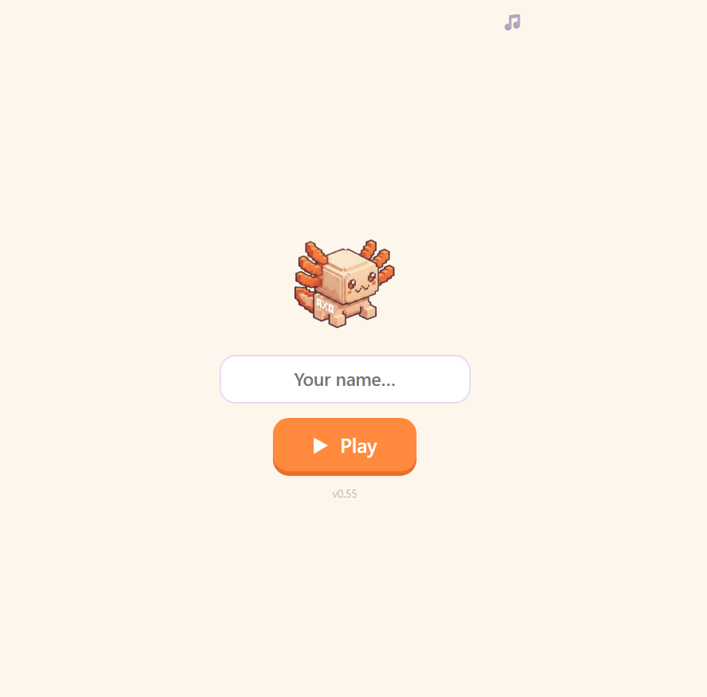

English through coding
A methodology developed by Arina Bolotbekova that fuses early coding logic with English language acquisition into a single learning loop — an approach with no found precedent in the products surveyed. axo acts as an interactive bridge into English literacy: rather than replacing formal reading, writing, or speech instruction, it builds an intuitive foundation. Children see a word, type the code command, hear it spoken, and watch axo act it out — using action to anchor core vocabulary in memory.
Two phases, one core loop
Guided introduction
Each word is introduced through visual, auditory, and typing prompts, so the child sees it, hears it, and types it before using it.
Recall in play
The child recalls and applies vocabulary in interactive play, giving every word an immediate purpose and reason to remember.
One loop, two skills
axo adapts Total Physical Response (TPR) — a proven language-learning method, developed by James Asher, that pairs spoken words with physical actions — and applies it to code. Instead of moving their own bodies, children type commands to control axo. Watching the character carry out their code serves as the physical anchor for new vocabulary.
Market research across leading children's coding and language apps found no precedent for this approach: none of the products surveyed fuses coding mechanics and language acquisition into a single learning loop.
Read the command
A short English instruction appears — a word, a verb, a simple sentence.
Type the code
The child writes the matching code command, connecting word to syntax.
Watch axo respond
axo carries out the action immediately — the loop closes, the word sticks.
Start screen

A real backend, not a static game
axo runs on a Cloudflare Worker at the edge, backed by a D1 (SQLite) database. One Worker does both jobs: it handles the API routes and falls through to static asset serving for everything else — one deploy, one Worker, no separate API host to keep in sync. Secrets (the Telegram bot token, the group ID, the admin token) live as Worker secrets and never reach the browser.
The split matters: everything in js/ runs in the child's browser and can
be read by anyone, so nothing there is trusted. Every decision that gates access is
made server-side in the Worker.
Verifying a Telegram session end-to-end
A Telegram Mini App hands the client an initData string. Trusting it as-is
would mean anyone could forge a user, so the Worker verifies it cryptographically before
the app is allowed to boot.
auth_date — limits how long a leaked initData string stays useful
Past the signature, the Worker asks the Telegram Bot API whether the user is actually in the axo group. That call never fails open — if Telegram is unreachable the response is "verification unavailable," not "welcome in." Every rejection logs a one-word reason code for ops, while the client only ever sees a generic error, so failed attempts learn nothing about which check they tripped.
One deliberate exception to the strictness: if the database write recording a verified user fails, the request still succeeds. Auth was already proven at that point, and a storage hiccup shouldn't lock a family out of the app. The diagnostics endpoint follows the same defensive default in the other direction — it reports itself disabled until an admin token is configured, rather than sitting open.
The gap this fills
Full methodology, sources, and the complete regional and global market research are on the research page →